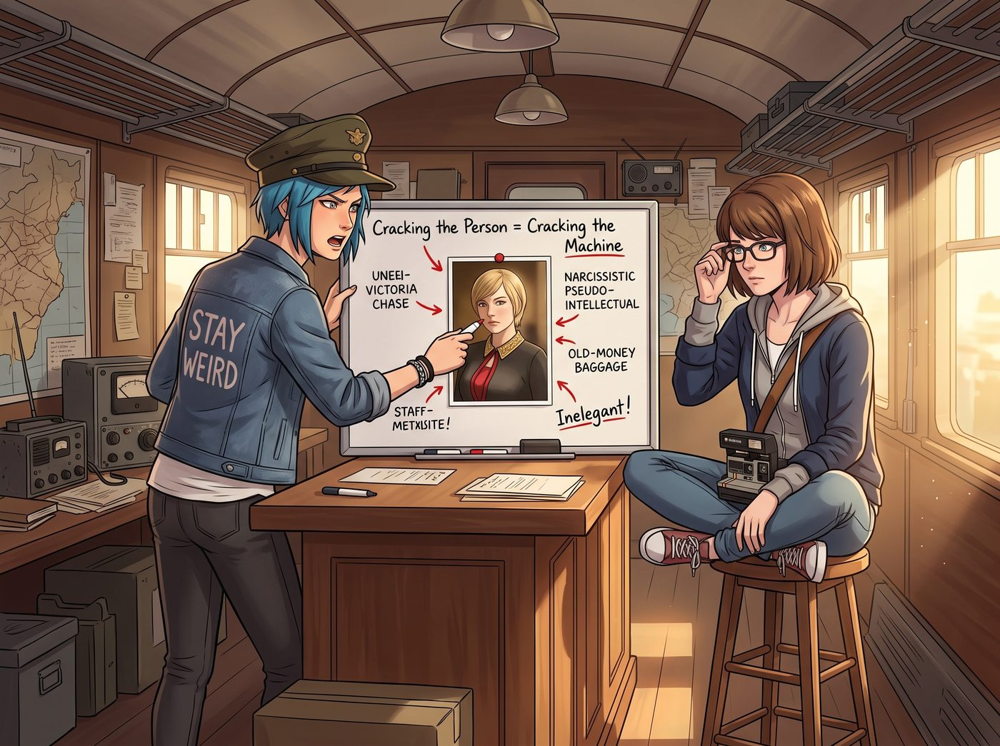

布萊切利園的名媛密碼

上午十點，二號車廂的起居廂裡瀰漫著一股絕望的低氣壓。
Chloe 舉著手機，整個人像一隻壁虎一樣貼在靠海那側的窗戶玻璃上，試圖捕捉微弱的訊號。她的手機螢幕上，拍賣平台的倒數計時器正以一種極其卡頓的方式，一格一格地刷新著那張她勢在必得的稀有特卡。
「見鬼！訊號又斷了！」Chloe 絕望地哀嚎。
她試過開熱點連筆記本電腦救急，但螢幕角落那個可憐的「一格訊號」圖示，連載入一張拍賣頁面的縮圖都要卡上十幾秒，更別提在最後幾秒搶拍。這也是當初基地要斥資裝星鏈的原因——這片懸崖太過偏僻，附近唯一的訊號塔遠在山的另一頭，手機訊號本身就是個看天吃飯的奢侈品，根本撐不起任何即時性的操作。
眼下唯一穩定、高速的網路，就是那組被鎖進 Victoria 六十四字元加密裡的星鏈 Wi-Fi。
一、矽谷外援的無情宣判
走投無路之下，Chloe 只能用僅剩的流量撥通了遠在西雅圖的 Warren 和 Brooke 的視訊電話。
畫面裡，Warren 正咬著一片吐司，而 Brooke 則一臉嫌棄地推開他，湊到鏡頭前：「Price，妳在開玩笑嗎？Victoria 這次用的是企業級加密，搭配六十四個字元的超長隨機密碼。妳想讓我遠端暴力破解？就算我現在駭進超級計算機陣列，算到宇宙熱寂那天都破解不出來。妳被物理學和密碼學雙重判了死刑，放棄吧。」
「Brooke！大家都是理工科的，妳不能見死不救啊！」Chloe 崩潰地抓著藍頭髮。
「科技解決不了階級的惡意。再見。」Brooke 無情地切斷了視訊。
二、盟軍情報處：轉向社會工程學
既然科技手段失效，二號車廂立刻進入了二戰時期的布萊切利園模式。
Chloe 在中島吧台上架起了一塊小白板，上面貼著 Victoria 的大頭照，周圍畫滿了紅色箭頭。她戴著一頂不知道從哪翻出來的舊軍帽，拿著馬克筆，眼神狂熱：
「聽著，Maxine 情報員。密碼學的第一法則：如果無法破解機器，就破解使用機器的人。Victoria Chase 是一個極度自戀、且患有嚴重老錢階級包袱的偽文青。她絕對不可能真的閉著眼睛在鍵盤上亂敲六十四個字母。那樣太不優雅了！」
Max 盤腿坐在高腳凳上，推了推眼鏡：「妳的意思是……」
「這六十四個字元，絕對是一段完整、且能彰顯她高貴品味的古法語文學名言！」Chloe 一巴掌拍在白板上，「我們現在不是在對抗路由器，我們是在破譯德國的恩尼格瑪密碼機！我們需要分析她的精神世界！」
三、藍領猛獸的法國文學地獄
五分鐘後，客廳的地毯上堆滿了從 Victoria 書架上偷渡出來的厚重外文書。
對一個從小只看美漫、改裝車雜誌和重金屬樂譜的藍領技師來說，法國文學簡直是降維打擊。
「這是什麼鬼東西？！」Chloe 翻開一本波特萊爾的詩集，痛苦地揪著頭髮，「為什麼這群法國人要在一個單字裡塞七個字母，結果只發出兩個音？！」
Max 翻著一本普魯斯特的長篇，頭也沒抬：「也許密碼是雨果的作品？」
「太俗了，她不會用雨果。」Chloe 咬著筆桿，大腦飛速運轉，「Victoria 喜歡那種帶著點毀滅感、高高在上、並且能嘲諷我們這群平民的句子。」
四、雙面間諜的行動
眼看時間一分一秒流逝，拍賣即將結束。Chloe 只能動用最後的王牌——代號白天使的雙面間諜，Kate Marsh。
「Kate，全靠妳了。」Chloe 雙手握住 Kate 的肩膀，神情凝重地遞給她一盤剛烤好的瑪德蓮蛋糕，「端進去，用妳那張無害的臉，套出她最近在讀什麼鬼東西。不要暴露我們正在試圖黑進路由器的企圖！」
Kate 乖巧地點點頭，端著盤子走進了 Victoria 的房間。
三分鐘後，小天使腳步輕快地走了出來，帶著她招牌的溫柔微笑：「Victoria 說，她最近覺得周圍充滿了粗俗的噪音，所以正在重溫十七世紀拉羅什富科的《箴言錄》。」
五、奇蹟的最後十秒
「拉羅什富科！就是這個老混蛋！」
Chloe 立刻撲向筆記本電腦，手指在鍵盤上瘋狂敲擊，同時看著手機上已經倒數到最後三十秒的拍賣介面。
「Max！快！搜他最刻薄的名言，要夠長！」
Max 飛速滑動手機：「找到了！這句：我們對別人的驕傲之所以感到無法忍受，是因為它傷害了我們的驕傲。」
「太長了！縮短！」 「那這句！完美的勇敢在於不為人知的情況下，去做那些我們在眾目睽睽之下也能做到的事。」
「算上空格和標點，剛好六十四個字元！」Chloe 的眼睛亮得像兩顆探照燈。她一邊咒罵著法國人該死的拼寫規則，一邊在鍵盤上盲打。
在拍賣倒數剩下最後五秒時，Chloe 按下了 Enter 鍵。
筆記本電腦右下角的 Wi-Fi 圖示閃爍了兩下，突然由灰轉白，滿格訊號瞬間亮起！
「連上了！！」Chloe 發出一聲野獸般的狂吼，幾乎是用砸的方式按下了介面上的最高出價按鈕。
畫面刷新。恭喜，您已贏得該商品。
六、總裁的挫敗
就在 Chloe 和 Max 在客廳裡激動地擊掌、甚至跳起了一段極其醜陋的勝利之舞時，Victoria 的房門打開了。
名媛原本端著咖啡出來準備看笑話，卻一眼看到了電腦上滿格的 Wi-Fi 訊號。
「這不可能。」Victoria 的咖啡杯差點掉在地上，她震驚地看著這群不學無術的傢伙，「那是企業級加密……你們是怎麼……？」
Chloe 轉過身，瀟灑地將那頂破軍帽扔在吧台上，用一種極其蹩腳、帶著濃厚美國西海岸口音的法語，得意洋洋地念出了一句話：「La parfaite valeur, Chase 夫人。下次設密碼前，記得把妳的《箴言錄》藏好。順便一提，那隻黑幫大龍貓的圖我也存雲端了，感謝妳的高速網絡支援。」